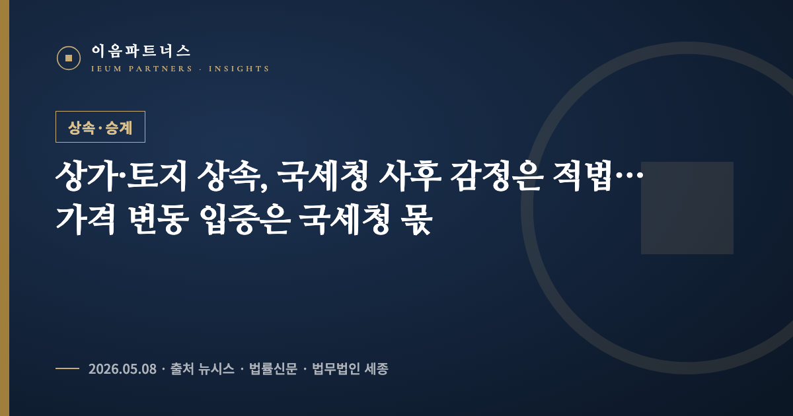

상가·토지 상속, 국세청 사후 감정은 적법…가격 변동 입증은 국세청 몫

꼬마빌딩(중소형 상가 건물)이나 토지를 물려받으면 보통 공시가격으로 상속세를 신고합니다. 그런데 국세청은 2020년부터 공시가격과 시세 차이가 큰 비주거용 부동산을 나중에 감정평가해 그 값으로 세금을 다시 매겨 왔고, 대법원은 2026년 5월 8일 이 방식이 적법하다고 최종 판단했습니다(2024두54348). 이 글에서는 판결 내용과 상가·토지를 가진 대표님이 확인할 점을 정리합니다.
이 판결은 대표님 개인 명의 부동산뿐 아니라 법인이 가진 건물에도 영향을 줍니다. 법인 부동산 값은 비상장주식 가치를 계산할 때 그대로 반영되기 때문입니다. 상속·증여를 앞둔 부동산이 있다면 카카오톡 채널 이음파트너스에서 신고 방법을 함께 비교해 볼 수 있습니다.
어떤 사건이었나
상속인 A씨는 2019년 4월 모친에게서 서울 서대문구 토지 366.3㎡를 상속받아 그해 10월 74억 3,400만 원으로 신고했습니다. 서울지방국세청은 감정평가를 거쳐 약 115억 5,000만 원을 시가로 보고 2020년 12월 상속세와 가산세 약 22억 원을 통지했습니다(뉴시스).
| 구분 | 내용 |
|---|---|
| 신고가액 | 74억 3,400만 원 (2019년 10월) |
| 국세청 감정가 | 약 115억 5,000만 원 |
| 통지 세액 | 상속세·가산세 약 22억 원 (2020년 12월) |
| 1심 | 납세자 측 감정가를 기준으로 상속세 4억여 원 감액 |
| 2심·대법원 | 법원 감정으로 시가 113억 5,050여만 원 산정, 9,970여만 원만 취소(2026년 5월 8일 확정) |
대법원은 무엇을 허용하고 무엇을 막았나
① 사후 감정 자체는 적법
대법원은 비주거용 부동산은 공시가격 현실화율(공시가격이 실제 시세를 반영하는 비율)이 낮아 시가가 제대로 반영되지 않는 문제가 계속돼 왔다며, 고가의 비주거용 부동산에 한정해 감정평가를 하는 것은 어느 정도 불가피하다고 봤습니다(뉴시스).
② 가격 변동이 없었다는 증명은 국세청이
감정가를 시가로 쓰려면 상속일부터 감정가액 평가서 작성일까지 가격 변동에 특별한 사정이 없어야 합니다. 대법원은 “해당 기간 중 가격변동의 특별한 사정이 없었다는 점은 과세관청이 증명해야만 한다”고 밝혔습니다(뉴시스). 이 사건에서는 그 사이 주변 상업지역 땅값이 3.6% 오른 점 등을 들어 국세청 감정가를 그대로 인정하지 않았습니다.
그렇다고 납세자에게 유리하기만 한 것은 아닙니다. 국세청 처분이 위법하더라도 소송 중 법원 감정 결과로 정당한 세액을 다시 계산할 수 있어, 이 사건에서도 취소된 금액은 9,970여만 원에 그쳤고 1심보다 불리한 결과가 됐습니다(법무법인 세종, 뉴시스).
대표님이 지금 확인할 것
- 개인이나 법인 명의의 상가·토지·건물 가운데 공시가격과 시세 차이가 큰 것이 있는지 목록을 만들어 보세요.
- 상속·증여 시점에 맞춰 감정평가를 받아 신고하는 방법과 공시가격으로 신고하는 방법을 세무사와 비교해 보시길 권합니다. 상속개시일 기준 감정평가 신고를 권하는 전문가 의견도 있습니다(법률신문).
- 법인 부동산은 비상장주식 평가에도 들어가니, 지분 증여 전에 회사 부동산 가치부터 점검하세요.
참고한 자료
- 대법원 "국세청 '비주거용 부동산 감정평가' 사업은 적법" — 뉴시스 (2026.06.17)
- 꼬마빌딩 소급감정, 상속세 부과처분 취소 대법원 판결 — 법률신문 (2026.07.24)
- Tax Guide - Case Review (대법원 2024두54348 등) — 법무법인 세종 (2026.07.01)
상가·토지 상속이나 법인 지분 증여를 준비하고 계시다면 카카오톡 채널 이음파트너스로 편하게 문의해 주세요.
※ 이 글은 일반적인 정보 제공을 위한 것으로, 개별 사안은 세무사·노무사 등 전문가와 함께 확인하시기 바랍니다.